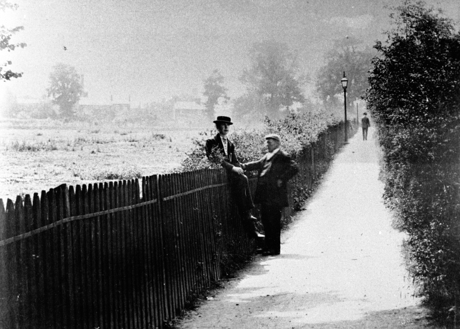

Earlsdon Jetty Reading the report of a Government Health Inspector, Mr Ranger, on conditions in the City of Coventry in 1849, is like reading a horror story. It's no wonder there was such a lot of disease there, diphtheria, whooping cough, scarlet fever, even smallpox, with typhoid and cholera not unknown.
One way to get there was across the Six Fields from Warwick Road to the south end of Elsdon Lane (now Earlsdon Avenue South), another was from Spon End up Hearsall Lane to the other end of the Lane. However the most direct route was via the Elsdon Jetty from the Butts, near St Thomas's Church. From 1838 this was crossed first by a small bridge carrying the Birmingham railway line, and then by another in 1850 by another bridge carrying the Nuneaton line, before forming a junction about midway along the length of Elsdon Lane. With the creation of Earlsdon in 1852 a water supply from the Artesian Well at Spon End, was laid on, with drainage pipes to take away both waste from the houses and rainwater from the streets. The city council refused to have this waste channelled into the city disposal system, so it was merely drained into an open ditch which ran alongside the Jetty, ultimately finding its way to the River Sherbourne. Although the waste only consisted of liquid sewerage (the 'nightsoil' from privies was disposed of separately), the drainage ditch soon became known as the 'Earlsdon Nuisance' . In hot weather particularly the stench was overpowering and it wet weather it flooded over the Jetty. For many years the Jetty was the only direct route for Earlsdonites into the city. This pedestrian only route was used by women to go shopping, men to work and children to school, it therefore posed a serious problem. By 1874, with the Earlsdon population now numbering about 500, it was decided that something had to be done. By raising a local rate a small sewerage purification unit was installed by the side of the Jetty and by 1877 it was operational. It was efficient enough in that it 'purified' the waste enough to eliminate most of the smell although at times of heavy rain flooding was still a problem. An Earlsdon resident of that time remembered it as being in winter "quite dangerous, as part of the way an open brook (the drainage ditch) ran on one side, and further on was a high hedge intersected with old hollow oak trees where boys and men concealed themselves and frightened pedestrians, especially the weaker sex". The most important event for Earlsdon since inception in 1852, came in 1890, when the estate was incorporated into the city, and the next step was to provide proper access to it. A plan was drawn up for the old Jetty to be replaced by a decent main road, suitable for all types of vehicle. From the Butts as far as the two railway bridges (which had to be rebuilt to take the wider road) it would just replace the Jetty. But after that it would be deflected to line up with the junction of Earlsdon Street and Earlsdon Lane (Earlsdon Avenue), forming a neat crossroads. At last in 1898 the Mayor was able to declare the road, now named Albany Road after the Duchess of Albany, well and truly open.
The top section of the Jetty remains to this day, leading from the bottom of Newcombe Road up to Earlsdon Avenue North. It comes out between the library and the school, providing access to the rear of houses on Albany Road and reminding us of the days when Earlsdon folk enjoyed their rambles up to the pleasant open pastures of 'Elsdon'. |